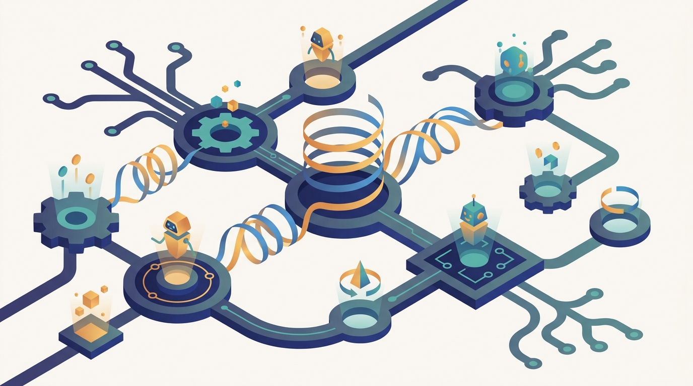

"I trained my policy to perfection against a fixed opponent. Then the opponent started learning too, and every lesson I had carefully memorized became wrong at exactly the same speed I learned it."
A Q-Function Chasing a Moving Target
Multi-agent reinforcement learning is the study of agents that learn their policies by trial and reward inside a shared environment that contains other learning agents, and its defining difficulty is non-stationarity: because every agent's environment includes the others, and the others are changing as they learn, the target each agent is chasing moves while it learns, breaking the convergence guarantees that single-agent reinforcement learning relied on. Chapter 28 gave the strategic theory of agents whose interests may align or conflict, and Chapter 29 built the architectures and protocols of designed agent societies, but neither let the agents discover their own behavior. That is the work here. The chapter formalizes the setting as a Markov game, a generalization of the single-agent Markov decision process to many agents acting simultaneously, with the matrix games of Chapter 28 recovered as the stateless special case, and then develops the algorithms the field has built to learn inside it: independent learners, centralized training with decentralized execution, value decomposition such as VDN and QMIX, multi-agent policy gradients such as MADDPG and MAPPO, and the credit assignment and non-stationarity treatments that make any of it work. Every method is a different answer to one question: how does an agent learn a good policy when the very thing it is learning about, the joint behavior of everyone else, is itself in motion? This is the learning core of Part VI, where the strategic foundations of Chapter 28 become the analytical lens for learning dynamics, the agent societies of Chapter 29 become populations that train rather than follow scripts, and the distributed reinforcement learning systems of Chapter 20 return as the engine that runs the experience collection and optimization across many machines.
Chapter Overview
This is the learning chapter of Part VI, and its subject is the gap between an agent that follows a designed policy and an agent that discovers one through reward, in a world where it is not the only one learning. The ten sections develop that subject in order. They begin by carrying single-agent reinforcement learning into the multi-agent setting and naming what breaks, then formalize the setting as a Markov game, then sort the field by the structure of the agents' rewards. From there they build the algorithmic toolkit: independent learning, centralized training with decentralized execution, value decomposition, policy gradients, and credit assignment, before confronting non-stationarity head-on and closing with the distributed systems that train these populations at scale. The through-line is the moving target. Every agent learns against an environment that includes other learners, so the optimization problem each one faces refuses to stand still.
The ten sections fall into three movements. The first frames the problem: Section 30.1 carries single-agent reinforcement learning into MARL and names what changes, Section 30.2 formalizes the Markov game, and Section 30.3 classifies cooperative, competitive, and mixed settings by the structure of the agents' rewards. The second movement builds the core algorithms: Section 30.4 develops independent learners, Section 30.5 introduces centralized training with decentralized execution, Section 30.6 factors joint value into per-agent components, and Section 30.7 develops the policy gradient methods that scale MARL to continuous and high-dimensional actions. The third movement confronts the hard parts: Section 30.8 assigns credit for shared rewards, Section 30.9 treats non-stationarity directly, and Section 30.10 closes with the distributed infrastructure that trains multi-agent populations at scale.
Read in order, the ten sections take you from "here is reinforcement learning for one agent" to a working understanding of how a population of agents learns to act together or against each other: carry RL across the bridge, formalize the game, classify the reward structure, try the naive thing, centralize the training but decentralize the execution, decompose the value, scale with policy gradients, solve credit assignment, confront the moving target, and run the whole thing across a cluster. The argument is cumulative and it carries the strategic toolkit of Chapter 28 into learning dynamics: equilibria become the solution concepts that learning may or may not reach, and the cooperative and competitive games become the reward structures that decide which algorithms apply. The agent societies of Chapter 29 become populations that learn rather than follow scripts, and the thread runs straight out of the chapter into the collective behavior of Chapter 31, where coordination emerges from many simple agents rather than from learned policies over joint state.
Prerequisites
This chapter stands on the two chapters immediately before it in Part VI and on the reinforcement learning foundations the rest of the book assumes. From Chapter 28: Game-Theoretic Foundations for Multi-Agent AI you carry the strategic vocabulary that frames every learning problem here: what a game is, what an equilibrium means, the difference between cooperative and competitive interaction, and why an agent's best response depends on what everyone else does, because the Markov game of Section 30.2 is exactly the dynamic, state-bearing generalization of those matrix games. From Chapter 29: Multi-Agent Systems you carry the engineering picture of a society of autonomous agents acting on partial views inside a shared environment, since MARL is what happens when those agents learn their behaviors rather than have them designed. The chapter also assumes basic single-agent reinforcement learning: Markov decision processes, value functions, Q-learning, policy gradients, and the actor-critic pattern, the machinery this chapter generalizes from one agent to many. For the systems half of the chapter, it builds directly on Chapter 20: Distributed Reinforcement Learning Infrastructure, whose actor-learner architectures, distributed experience collection, and replay systems return in Section 30.10 as the engine that trains multi-agent populations at scale. Light formal notation and the ability to read pseudocode are assumed throughout, as in the rest of the book. No prior exposure to multi-agent learning is required; Section 30.1 builds the multi-agent setting from the single-agent case before anything is built on it.
Learning Objectives
- Explain how single-agent reinforcement learning extends to many agents, and identify precisely what breaks when more than one agent learns at once.
- Formalize a multi-agent learning problem as a Markov game, relating it to the single-agent Markov decision process and to the matrix games of Chapter 28.
- Classify a multi-agent setting as cooperative, competitive, or mixed by the structure of the agents' rewards, and reason about how that structure dictates the choice of algorithm.
- Compare independent learning against centralized training with decentralized execution, and explain when each is appropriate and why the centralized critic helps.
- Apply value decomposition methods such as VDN and QMIX to factor a team's joint action-value into learnable per-agent components.
- Develop multi-agent policy gradient methods such as MADDPG and MAPPO, and solve the credit-assignment problem of attributing shared reward to individual agents.
- Diagnose non-stationarity in multi-agent learning and apply the techniques that mitigate it, and scale MARL training across many machines using distributed reinforcement learning infrastructure.
If you keep one thing from this chapter, keep this: multi-agent reinforcement learning is learning a policy by trial and reward inside a Markov game whose other players are themselves learning, so the central challenge is non-stationarity, and the field's algorithms (independent learners, centralized training with decentralized execution, value decomposition, multi-agent policy gradients, and credit assignment) are all different answers to the question of how an agent can learn well when its environment will not hold still. Read forward, the sections build the discipline in the order a practitioner needs it: first frame the problem and formalize the game, then classify the reward structure, then build the algorithmic toolkit from the naive baseline up to the methods that win at scale, then confront the two hardest threads, the moving target and the distributed systems that train against it. Read as a question, the chapter asks of any system of learning agents: how does single-agent RL change here, what game are we in, do the agents cooperate or compete, can independent learners cope, does a centralized critic help, how do we split the team's value, how do policy gradients scale, who earned the reward, how do we tame the non-stationarity, and how do we train the whole population across a cluster. The roadmap below walks the ten sections that answer it, and the last one carries the thread straight into the collective behavior of the chapter ahead.
Chapter Roadmap
- 30.1 From Reinforcement Learning to MARL Carries single-agent reinforcement learning across the bridge into many agents, naming precisely what changes when an agent must learn amid other agents who are learning too.
- 30.2 Markov Games Formalizes the multi-agent setting as a Markov game, the generalization of the Markov decision process to simultaneous decision-makers that recovers the matrix games of Chapter 28 as its stateless case.
- 30.3 Cooperative, Competitive, and Mixed Settings Sorts the field by the structure of the agents' rewards, distinguishing shared-reward teams, zero-sum opponents, and the mixed-motive settings in between that decide which algorithms apply.
- 30.4 Independent Learners Tries the naive thing first, treating each agent as a single-agent learner that ignores the others, and works out when this surprisingly strong baseline holds up and when it fails.
- 30.5 Centralized Training with Decentralized Execution Introduces the dominant MARL paradigm, using global information and a centralized critic at training time while keeping each agent's deployed policy fully decentralized.
- 30.6 Value Decomposition Factors a cooperative team's joint action-value into learnable per-agent components, developing VDN and QMIX and the monotonicity condition that makes decentralized greedy action consistent with centralized value.
- 30.7 Policy Gradient Methods in MARL Scales MARL to continuous and high-dimensional action spaces with multi-agent actor-critic methods such as MADDPG and MAPPO, built on centralized critics over the joint action.
- 30.8 Credit Assignment Attributes a shared team reward to the individual agents that earned it, developing counterfactual baselines such as COMA so each agent learns from its own contribution rather than the group's noise.
- 30.9 Non-Stationarity Confronts the central challenge directly, the moving target created when every agent's environment contains other learners, and develops the techniques that let learning converge despite it.
- 30.10 Distributed MARL Training Closes the chapter by scaling multi-agent training across many machines, putting the actor-learner architectures and distributed experience systems of Chapter 20 to work on whole populations of agents.
Read the ten sections in order and you will hold a working model of how a population of agents learns to act in a shared world: Section 30.1 carries reinforcement learning into the multi-agent setting, Section 30.2 formalizes the Markov game, Section 30.3 classifies the reward structure, Section 30.4 tries independent learners, Section 30.5 centralizes training and decentralizes execution, Section 30.6 decomposes the value, Section 30.7 scales with policy gradients, Section 30.8 assigns credit, Section 30.9 tames non-stationarity, and Section 30.10 trains the population at scale. The thread to watch is the moving target: every method in the chapter is a different way of learning well when the environment, made of other learners, refuses to stand still. That thread runs straight out of the chapter into the collective behavior of Chapter 31, where coordinated group behavior emerges from many simple agents rather than from policies learned over joint state.
What's Next?
This chapter built the learning core of Part VI: how an agent discovers a policy by trial and reward when its environment contains other agents who are learning too, from the Markov game that formalizes the setting through value decomposition, policy gradients, credit assignment, and the distributed systems that train it all at scale. The agents here learn rich policies over joint state, and the central struggle is the non-stationarity that learning amid other learners creates. Chapter 31: Swarm Intelligence and Collective Behavior turns the problem inside out. Instead of a small number of agents each learning a sophisticated policy, it asks how coordinated, robust, global behavior can emerge from very many agents following very simple local rules, with no learned value function and no joint optimization at all. Where this chapter gave you populations that learn their coordination through reward, the next gives you populations whose coordination is an emergent property of simple interaction, flocking, stigmergy, and self-organization. Read Chapter 31 next, and watch coordination appear from the bottom up rather than being learned from the top down.
Bibliography & Further Reading
Foundations and Frameworks
Littman, M. L. "Markov Games as a Framework for Multi-Agent Reinforcement Learning." Proceedings of the Eleventh International Conference on Machine Learning (ICML), 1994. sciencedirect.com
The paper that cast multi-agent reinforcement learning as learning in a Markov game and introduced minimax-Q, the formal foundation for the Markov game setting of Section 30.2.
Tan, M. "Multi-Agent Reinforcement Learning: Independent vs. Cooperative Agents." Proceedings of the Tenth International Conference on Machine Learning (ICML), 1993. mit.edu
The early study contrasting independent Q-learners with cooperative agents that share information, the historical anchor for the independent-learning baseline of Section 30.4.
Centralized Training and Policy Gradients
Lowe, R., Wu, Y., Tamar, A., Harb, J., Abbeel, P., Mordatch, I. "Multi-Agent Actor-Critic for Mixed Cooperative-Competitive Environments (MADDPG)." arXiv:1706.02275, 2017. arxiv.org
The multi-agent actor-critic with centralized critics over the joint action that defined centralized training with decentralized execution, central to Sections 30.5 and 30.7.
Foerster, J., Farquhar, G., Afouras, T., Nardelli, N., Whiteson, S. "Counterfactual Multi-Agent Policy Gradients (COMA)." arXiv:1705.08926, 2017. arxiv.org
The counterfactual baseline that isolates each agent's contribution to a shared reward, the centerpiece of the credit-assignment treatment in Section 30.8.
Yu, C., Velu, A., Vinitsky, E., Gao, J., Wang, Y., Bayen, A., Wu, Y. "The Surprising Effectiveness of PPO in Cooperative Multi-Agent Games (MAPPO)." arXiv:2103.01955, 2021. arxiv.org
The study showing that a centralized-critic PPO is a strong, simple baseline across cooperative benchmarks, a workhorse method for the policy gradients of Section 30.7.
de Witt, C. S., Gupta, T., Makoviichuk, D., Makoviychuk, V., Torr, P. H. S., Sun, M., Whiteson, S. "Is Independent Learning All You Need in the StarCraft Multi-Agent Challenge? (IPPO)." arXiv:2011.09533, 2020. arxiv.org
The result that independent PPO learners are competitive with centralized methods on hard cooperative tasks, sharpening the independent-learner discussion of Section 30.4.
Value Decomposition
Sunehag, P., Lever, G., Gruslys, A., Czarnecki, W. M., et al. "Value-Decomposition Networks for Cooperative Multi-Agent Learning (VDN)." arXiv:1706.05296, 2017. arxiv.org
The additive factorization of a team's joint action-value into per-agent terms, the first value-decomposition method developed in Section 30.6.
Rashid, T., Samvelyan, M., de Witt, C. S., Farquhar, G., Foerster, J., Whiteson, S. "QMIX: Monotonic Value Function Factorisation for Deep Multi-Agent Reinforcement Learning." arXiv:1803.11485, 2018. arxiv.org
The monotonic mixing network that generalizes additive decomposition while keeping decentralized greedy action consistent with the centralized value, central to Section 30.6.
Benchmarks and Social Dilemmas
Samvelyan, M., Rashid, T., de Witt, C. S., Farquhar, G., et al. "The StarCraft Multi-Agent Challenge (SMAC)." arXiv:1902.04043, 2019. arxiv.org
The cooperative micromanagement benchmark on which value decomposition and centralized-critic methods are standardly evaluated, the reference testbed for Sections 30.5 through 30.8.
Leibo, J. Z., Zambaldi, V., Lanctot, M., Marecki, J., Graepel, T. "Multi-Agent Reinforcement Learning in Sequential Social Dilemmas." arXiv:1702.03037, 2017. arxiv.org
The study of how cooperation and defection emerge among learning agents in mixed-motive games, the empirical backbone of the mixed-settings discussion in Section 30.3.
Large-Scale Systems
Vinyals, O., Babuschkin, I., Czarnecki, W. M., et al. "Grandmaster Level in StarCraft II Using Multi-Agent Reinforcement Learning (AlphaStar)." Nature, 575, 2019. nature.com
The system that reached grandmaster play through league-based multi-agent training, a landmark for the distributed competitive training discussed in Section 30.10.
OpenAI, Berner, C., Brockman, G., et al. "Dota 2 with Large Scale Deep Reinforcement Learning (OpenAI Five)." arXiv:1912.06680, 2019. arxiv.org
The large-scale self-play system that trained a five-agent team for months across thousands of machines, the flagship example of the distributed MARL training of Section 30.10.